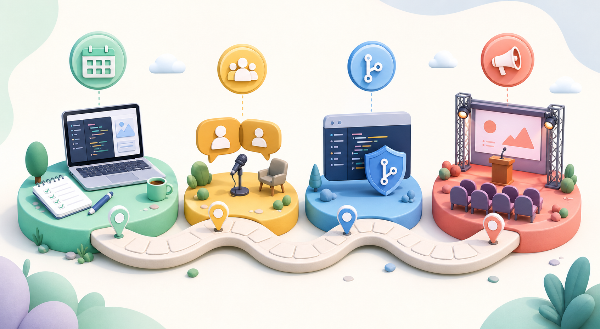

Show the working project, key choices, and the result you can defend.
Demo Day
A live Demo Day review where interns show real tech work, answer expert questions, and prove the work is strong enough to support a first real tech job in a technically rigorous industry.
Panelists probe trade-offs, failures, fundamentals, and live changes.
Pass and earn the Ring, or receive focused feedback and a retry path.

Practice with an AI mentor
AI is welcome. Fake proof is not. HighBar cares about honest evidence, sound judgment, working results, and whether the intern can defend the work under expert pressure. There is one rigor level: job-ready technical proof.
- Ask for skeptical review.
- Practice live constraint changes.
- Save questions that surprised you.

Prep Without Spiraling
Keep the final month simple: make the demo reliable, rehearse the explanation, freeze the code, then sleep like it matters.
- Four weeks: working end-to-end.
- Two weeks: harsh dry run.
- One week: only demo-path fixes.

What The Panel Rewards
Panelists are looking for real work, clear reasoning, and honest boundaries. Bluffing hurts. Calmly explaining how you would find an answer helps.
Common mistakes
Not every intern passes every checkpoint, and not every intern passes Demo Day. Most failures are ordinary, fixable problems: the project is not ready, the evidence is thin, or the intern cannot yet explain the hard trade-offs. These placeholder frequencies show how often mistakes appear among delayed or failed attempts.
Unreliable live demo42%
Weak evidence log39%
Cannot explain trade-offs36%
No user or stakeholder feedback33%
Scope too large31%
Metrics do not match the claim29%
Over-rehearsed pitch, under-tested project27%
Missing failure analysis25%
Poor source or data hygiene23%
Cannot reproduce the result21%
Safety or ethics not addressed19%
No clear next experiment18%
Dependency on hidden helper work16%
Weak fundamentals under questions14%
Poor time management12%
If you fail monthly check-in #4
Check-in #4 is the final gate before Demo Day. If you fail it, payment rules change only in one important way: we require a passing check-in before greenlighting Demo Day, and every additional check-in meeting still costs $100 or one monthly check-in credit. For each check-in or Demo Day review, the only accepted evidence, presentation, and artifact format is a single public YouTube video between 30 and 60 seconds. Interns may ask third parties, such as a professor, employer, or domain expert, to evaluate the work for coaching, but HighBar's review artifact remains that one video. Interns may also request one free, one-time audit from the HighBar organization. These academic policies protect interns by preventing repeated paid attempts before evidence is ready, and they protect mentors, reviewers, and employers by requiring a clear passing record before HighBar represents the work as credential-worthy.
You control the timeline, with HighBar boundaries
HighBar paths can be fast, slow, sponsored, interrupted, self-funded, employer-backed, or repaired after a miss. These examples show how pass/fail outcomes, cash, credits, sponsorship, and time delays can change the journey without weakening the standard.
Project proof ready
Pass: credit used
Pass: sponsor paid
Pass: credit used
Pass: sponsor paid
Demo Day passed
Start project proof
Pass: cash paid
Pass: cash paid
Pass: cash paid
Pass: cash paid
Demo Day passed
Mentor joins early
Pass: credit used
Pass: cash paid
Pass: credit used
Demo Day passed
Employer scope chosen
Pass: employer paid
Pass: employer paid
Pass: employer paid
Demo Day interview
Pass: cash paid
Pass: cash paid
Pass: cash paid
Fail: fourth gate
Pass: retake paid
Demo Day passed
Literature map posted
Pass: cash paid
Pass: credit used
Data review passed
Final check passed
Demo Day passed
Pass: credit used
Delay exceeds boundary
Credit expires unused
Pass: cash paid
Demo Day delayed
Fail: first check
Pass: retake paid
Pass: cash paid
Pass: cash paid
Pass: cash paid
Demo Day passed
Fail: first check
Fail: second check
Fail: third check
Six-month wait
Portfolio rebuilt
Fresh check scheduled
Multiple checks fail
Costs keep rising
Sixth failure lands
One-year wall begins
Portfolio rebuilt slowly
Return after waiting
Check-in rubric
Each check-in is scored from 0-100% across the same core metrics. Demo Day is simply a bigger check-in with more pressure, more observers, and a stronger expectation that the project works. A 75% total score is the pass/fail cutoff.
The project runs, demonstrates the promised behavior, and the intern can explain the mechanism, constraints, and trade-offs.
The single 30-60 second public YouTube video shows the strongest proof, names limits honestly, and can be defended under questions.
The intern names what broke, what was learned, and what would be tried next.
The work has been exposed to someone besides the intern, and that feedback changed the project.
Risks, privacy, bias, reliability, or domain-specific safety concerns are identified honestly.
The intern has a credible plan for deployment, improvement, hiring conversation, or further study, and can answer skeptical next-step questions.
It's ok to make mistakes
Interns control the cadence, but boundaries are important: every monthly check-in or Demo Day can be delayed up to 30 days without consequence; after that, the consequence is minus one check-in credit. After 3 failed check-ins, there is a soft wall: the intern must wait 6 months before the next check-in so they can improve their project portfolio. After 6 failed check-ins, there is a 1 year wall before another check-in. This protects interns from spending money before the evidence is ready, protects mentors and reviewers from repeated low-signal meetings, and protects HighBar's reputation so a passed credential remains meaningful to employers.
Counterfeit evidence
Counterfeit evidence is anything that makes the project look more real, more tested, or more personally built than it actually is. The easiest way to avoid this perception is one public YouTube video. HighBar accepts exactly one presentation artifact per check-in or Demo Day: a public YouTube video, 30-60 seconds long, posted within 24 hours before the review. Your voice should walk reviewers through the work, with webcam on for 100% of it, plus screen sharing and live footage.
Polished screenshots with no working demo, cherry-picked metrics, unverifiable testimonials, hidden helper work, copied code without attribution, AI-generated explanations the intern cannot defend, or a video that avoids the hard part of the project.
Post one public YouTube video, keep it 30-60 seconds, show the hard part, credit outside help, and say plainly what is prototype, borrowed, simulated, or unfinished.
More rules that matter
Bring one public YouTube link posted within the required window. The 30-60 second video should show your voice narration, webcam, screen share, live footage, working project, the strongest proof, known failure cases, and what changed since the last check-in.
Monthly check-ins use one qualified reviewer. Demo Day usually uses a broader panel so the pass/fail decision does not depend on one person's taste.
A failed monthly check-in or Demo Day does not erase progress. The intern receives focused feedback, fixes the project, and schedules a later check-in or Demo Day when ready.
Letters, professor comments, employer reviews, GitHub history, and user interviews can guide coaching, but they are not accepted as the official review artifact. HighBar reviews one public YouTube video.
A passed HighBar credential should tell employers what the intern built, what evidence was reviewed, what questions were asked, and where the intern still has room to grow.
Interns control the cadence, but boundaries are important. Delay if the demo only works once, if the intern cannot explain the core mechanism, or if the evidence is mostly promises. Any monthly check-in or Demo Day can be delayed up to 30 days without consequence; after that, the consequence is minus one check-in credit.
Mentors may use monthly check-in credits to reduce the intern's cost, but credits do not guarantee a pass. The work still has to clear the rubric.
Reviewers should challenge the evidence, not the intern's confidence, accent, background, or presentation style. Useful pressure is specific, technical, and respectful.